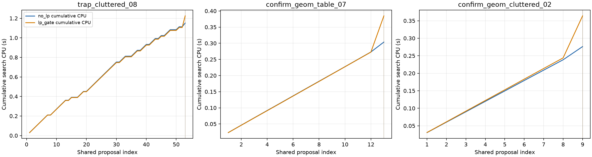
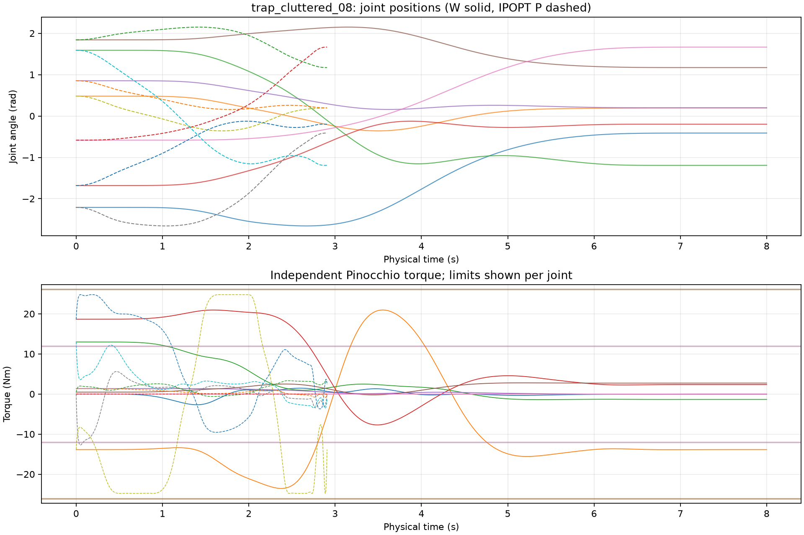
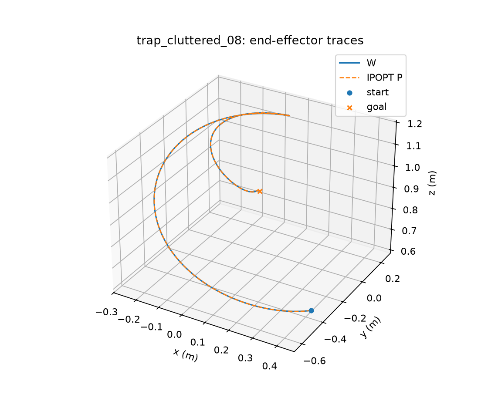
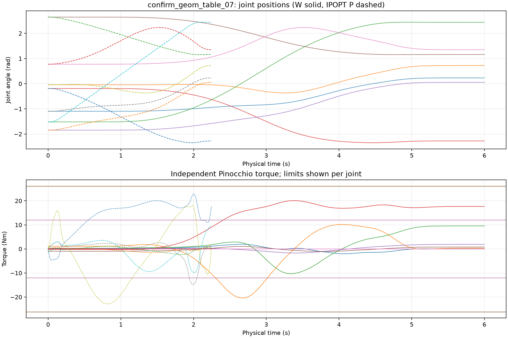
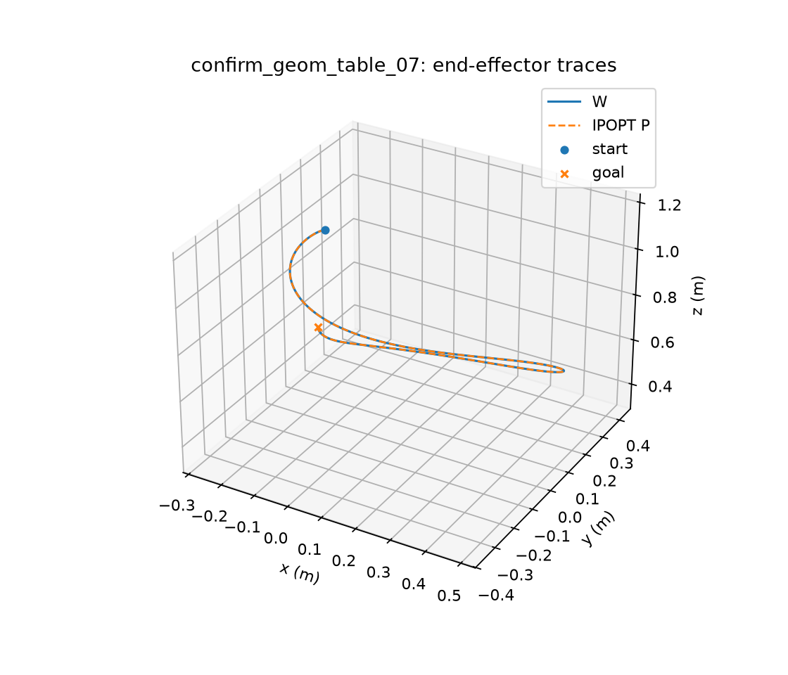
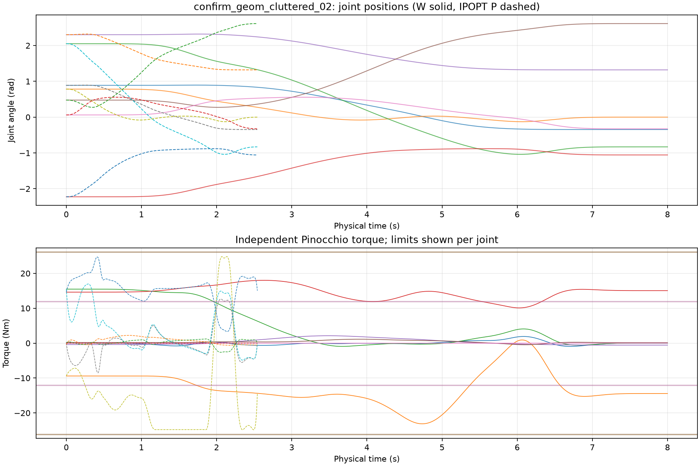
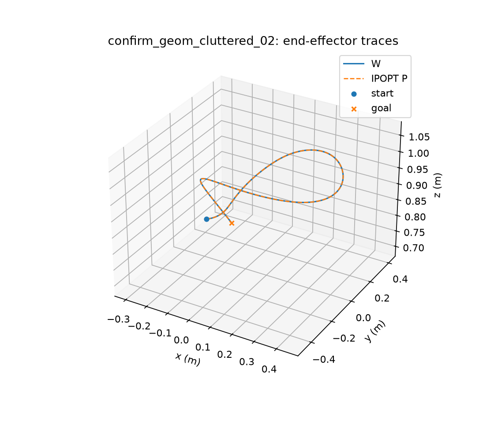

Both arms evaluate the exact SAME frozen LP-blind global proposal bank in the same order. Only a numerically dual-checked positive necessary torque LP can exclude a path from expensive timing. LP zero is inconclusive. Only independently physical+Scaled95 qualified dense/adaptive witnesses count as success. All tests use synthetic actuator limits, not Panda manufacturer ratings. No continuous-time torque or collision guarantee is claimed.
{
"experiment_status": "COMPLETE",
"decision": "NO_GO_LP_GATE",
"qualified_counts": {
"no_lp": 3,
"lp_gate": 3
},
"per_budget_success": {
"no_lp": {
"16": 2,
"32": 2,
"64": 3,
"128": 3
},
"lp_gate": {
"16": 2,
"32": 2,
"64": 3,
"128": 3
}
},
"safety_alerts": []
}| case_id | arm | status | first_qualified_proposal | search_wall_s | lp_rejections | constructive_timing_calls | total_rnea_calls | duration_s |
|---|---|---|---|---|---|---|---|---|
| trap_cluttered_08 | no_lp | QUALIFIED_RESCUE | 53 | 1.1510992189869285 | 0 | 1 | 5416 | 8.0 |
| trap_cluttered_08 | lp_gate | QUALIFIED_RESCUE | 53 | 1.2246614699834026 | 0 | 1 | 5662 | 8.0 |
| confirm_geom_table_07 | no_lp | QUALIFIED_RESCUE | 13 | 0.30373768298886716 | 0 | 1 | 2191 | 6.0 |
| confirm_geom_table_07 | lp_gate | QUALIFIED_RESCUE | 13 | 0.3848446370102465 | 0 | 1 | 2437 | 6.0 |
| confirm_geom_cluttered_02 | no_lp | QUALIFIED_RESCUE | 9 | 0.27624199097044766 | 0 | 1 | 1675 | 8.0 |
| confirm_geom_cluttered_02 | lp_gate | QUALIFIED_RESCUE | 9 | 0.36390542198205367 | 0 | 1 | 1921 | 8.0 |
Raw trajectory SHA manifests, CPU timing boundaries and independent receipts are required before interpreting apparent compute savings.
NO_GO: the LP gate preserved all three qualified rescues but excluded no candidates and saved no constructive timing calls. It added 246 RNEA calls per task and increased wall time on every task. The shared prospective generator found each W before proposal 64, so this three-case study does not establish behavior on harder proposal banks.
| Task | Arm | Status | Proposals | LP exclusions | Timing calls | CPU seconds | RNEA calls | W duration (s) |
|---|---|---|---|---|---|---|---|---|
| trap_cluttered_08 | no_lp | QUALIFIED_RESCUE | 53 | 0 | 1 | 1.1510992189869285 | 5416 | 8.0 |
| trap_cluttered_08 | lp_gate | QUALIFIED_RESCUE | 53 | 0 | 1 | 1.2246614699834026 | 5662 | 8.0 |
| confirm_geom_table_07 | no_lp | QUALIFIED_RESCUE | 13 | 0 | 1 | 0.30373768298886716 | 2191 | 6.0 |
| confirm_geom_table_07 | lp_gate | QUALIFIED_RESCUE | 13 | 0 | 1 | 0.3848446370102465 | 2437 | 6.0 |
| confirm_geom_cluttered_02 | no_lp | QUALIFIED_RESCUE | 9 | 0 | 1 | 0.27624199097044766 | 1675 | 8.0 |
| confirm_geom_cluttered_02 | lp_gate | QUALIFIED_RESCUE | 9 | 0 | 1 | 0.36390542198205367 | 1921 | 8.0 |
All methods used the same per-task proposal bank. Search timing excludes common bank generation and offline qualification. Each W has independent dense 8,193-point and adaptive receipts (8,204–8,207 samples), with physical and Scaled95 checks passing. These are sampled checks, not continuous-time certificates.

| Task | Bank SHA256 | Source task SHA256 | Torque profile SHA256 | Original native geometry SHA256 |
|---|---|---|---|---|
| trap_cluttered_08 | cd01d388b6843b0bf95471e8de15e20601b35ee6550c4f6a66f82fc1e017658e | bba76af506c5677fd3317d7fd784579b959280c4d1c89e07e9c7d5c7ee6db354 | 2fcc2fb06ed57586443197b65acd7556b0267f89f1d00ee80add08882524aa50 | 656bbb8615acdda7e41e9d2423d4a6e5bb91ed1c8f0596884f093beb753e3d57 |
| confirm_geom_table_07 | 77b58e98967ec1504ec3ea393e3dd5e6b4ef03d858e5ea6ce3e966f4e9033b4c | ab21291db920246f298722bb7877b0c15d8e0a3c45dee58bffeb8d64e3cd290b | 63efbd648a621f796f04bd9b317d146ab13450511d2b7c52c4af7ac6433cb1ac | a517b394c0025007ef31261e2a1a44c77e27e5e495406ce79697c411b37a0f2d |
| confirm_geom_cluttered_02 | d18fcc6e90c4e56f66d3521310b7c339dd24cf266c7221631eaee49bc04d2ac9 | 5cab1bd68c017b2340fd1f72c55064c46a63c9674edda8cfc8f81e0e3cc775a7 | e80bb836142ad1606233567b07e693f470b42cbe67bc7ac79e98478e562bb73d | a0e4c11e4a057e8509e022601fe49bc71a6dea630cbe177015208ad73709d4dd |
The generator is LP-blind and uses only the nominal native path, fixed seed, and registered perturbation schedule. The same proposal bank/order is used by both arms; the prior W trajectory is excluded from proposal construction.
| Task | W(s) | IPOPT P(s) | Converged | Iterations | Solver s | Independent samples | Physical P | Scaled95 P | Scaled95 residuals by family |
|---|---|---|---|---|---|---|---|---|---|
| trap_cluttered_08 | 8.0 | 2.906695768572586 | True | 50 | 33.73950973601313 | 32915 | True | False | {'position': 0.0, 'velocity': 0.00012187321492618253, 'acceleration': 0.0013911503003374293, 'jerk': 0.03655685469470882, 'torque': 0.011028064772332868} |
| confirm_geom_table_07 | 6.0 | 2.244931171400508 | True | 33 | 21.76628478197381 | 32927 | True | False | {'position': 0.0, 'velocity': 5.9595159054737223e-05, 'acceleration': 0.02567396743542716, 'jerk': 2.444090963201802, 'torque': 0.0} |
| confirm_geom_cluttered_02 | 8.0 | 2.5418561852688977 | True | 35 | 23.448830114968587 | 32925 | True | False | {'position': 0.0, 'velocity': 7.121417861544188e-05, 'acceleration': 0.020885478322112405, 'jerk': 0.0, 'torque': 0.03595011166785156} |
IPOPT retimed the exact frozen W geometry and converged locally on all three tasks. The optimized squared-speed controls and geometry knots are saved. Independent Pinocchio checks on 32,769 uniform progress samples plus spline-knot/extrema samples passed original physical limits for P, but the extra Scaled95 contract failed on at least one dynamic family in every case; P is therefore not called a qualified Scaled95 witness. This remains a local retiming result, not a global timing optimum.






The instrumented and uninstrumented one-restart challenge both returned FAILED after five planner attempts for confirm_geom_cluttered_02 (same task seed). The instrumented run captured 10 finalizer invocations, 40 lanes and 18 distinct exact native cubic geometries. Of those unique curves, 15 had a positive sampled necessary LP gap above 0.005; 6 passed sampled independent geometry checks, with 1 both geometry-valid and LP-inconclusive. Every captured native path mask was true, while collision and limits/dynamics masks were false. TimeOpt integrated times were NaN, all 40 sampled-duration masks were false, and the captured q/qd/qdd/jerk arrays were NaN; hence no actual post-TimeOpt physical-state comparison was available. The instrumentation outcome matches the uninstrumented failure, but the exclusive failure cause remains unresolved.
On the two previously captured valid-geometry, zero-LP-gap clutter curves, stored IPOPT retiming diagnostics did not qualify either: local solver status 2, stationarity around 3.3e17, durations about 508,000 s, Scaled95 torque failed, and independent world clearance was 0.00495 m (below the 0.005 m threshold). Zero LP gap is inconclusive and these outcomes do not prove path infeasibility.
{
"instrumented": {
"name": "F000",
"restart": 0,
"seed": 20261129,
"profile_sha256": "e80bb836142ad1606233567b07e693f470b42cbe67bc7ac79e98478e562bb73d",
"status": "FAILED",
"attempt_index": 0,
"setup_and_warmup_wall_s": 23.756022311979905,
"plan_wall_s": 3.447940476005897,
"planning_attempts": 5,
"reason": "native full planner returned no successful trajectory"
},
"uninstrumented": {
"name": "F000",
"restart": 0,
"seed": 20261129,
"profile_sha256": "e80bb836142ad1606233567b07e693f470b42cbe67bc7ac79e98478e562bb73d",
"status": "FAILED",
"attempt_index": 0,
"setup_and_warmup_wall_s": 23.80737241404131,
"plan_wall_s": 2.857685402035713,
"planning_attempts": 5,
"reason": "native full planner returned no successful trajectory"
},
"prior_zero_gap_retimes": [
{
"file": "/home/pkicki/curobo/research/joint_time_oracle/results/native_pretimeopt_probe_metrics_20261108/j1234_f0300/native_full/confirm_geom_cluttered_02/F000_pretimeopt_008_independent_retime.json",
"sha256": "1ffeed5488ed11fdc4e509c690267ab1e52223eb986bb28f4aa35f455ae1dd71",
"geometry_sha256": "616ab2a3422ea7a8600532fd4b05805e5b0a03fe6d201fc017805af2a22dc990",
"duration_s": 508055.6789564664,
"solver_status": 2,
"solver_converged": false,
"primal_min_margin": -0.050807893819435845,
"stationarity_inf": 3.300456139288219e+17,
"scaled95_dynamic_pass": false,
"collision_clearance_m": 0.0049468250237366534,
"qualified": false
},
{
"file": "/home/pkicki/curobo/research/joint_time_oracle/results/native_pretimeopt_probe_metrics_20261108/j1234_f0300/native_full/confirm_geom_cluttered_02/F004_pretimeopt_008_independent_retime.json",
"sha256": "dc787be0a0233e3111d9e268917fe8150f529ee7a9e137af68bc7cc9e811dbd6",
"geometry_sha256": "686f6a76c8316dada3f64e5a20d8719a922ee491e9368bd29e2c3f5b6d5e670f",
"duration_s": 508267.9110002005,
"solver_status": 2,
"solver_converged": false,
"primal_min_margin": -0.05076684918571339,
"stationarity_inf": 3.306455113605442e+17,
"scaled95_dynamic_pass": false,
"collision_clearance_m": 0.004950766806109827,
"qualified": false
}
],
"captured": {
"finalizer_invocations": 10,
"captured_lanes": 40,
"unique_geometry_count": 18,
"unique_lp_positive_count": 15,
"unique_lp_inconclusive_count": 3,
"unique_geometry_valid_count": 6,
"unique_valid_and_lp_inconclusive_count": 1,
"post_lane_status_counts": {
"INVALID_NATIVE_TIMING_DURATION": 40
},
"native_masks": {
"path_valid": [
true,
true,
true,
true
],
"collision_valid": [
false,
false,
false,
false
],
"limits_and_dynamics_valid": [
false,
false,
false,
false
]
},
"sample_archive_sha256": "79cceb98857c0eaddb82b927f85452c2356b9206f39d2cad9cea2e9737338aae"
}
}Checksum inventory: artifact_manifest.json.